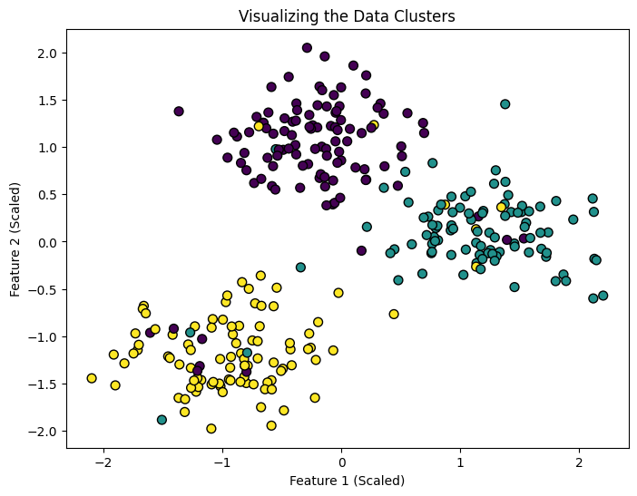
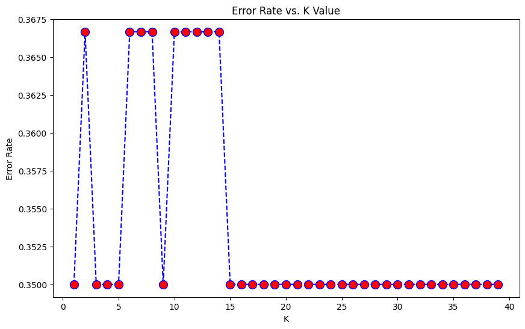

K-Nearest Neighbors (K-NN): The “Neighborhood” Logic
K-NN is a simple, supervised learning algorithm that can be used for both classification and regression. It operates on a very intuitive principle: “Tell me who your neighbors are, and I’ll tell you who you are.”
Instance-Based Learning: It doesn’t “learn” a model. Instead, it memorizes the training data and performs a search when a new prediction is needed.
The “K” Parameter: This represents the number of nearest neighbors the model looks at to make a decision.
K-Nearest Neighbors (K-NN): The “Neighborhood” Logic
K-NN is one of the most intuitive algorithms in Machine Learning. It follows a simple rule: “Tell me who your neighbors are, and I’ll tell you who you are.”
1. Generating Synthetic Clusters
To demonstrate K-NN, we are using the make_blobs function to create 300 samples grouped into 3 distinct clusters. This simulates a real-world classification problem, such as grouping customers based on their spending habits and age.
n_samples (300): The total number of data points.
centers (3): The number of categories (classes) we want to predict.
cluster_std (1.5): The “spread” of the data. A higher number makes the clusters overlap, making the classification task more challenging for the algorithm.
Code
import numpy as npimport matplotlib.pyplot as pltfrom sklearn.datasets import make_blobsfrom sklearn.neighbors import KNeighborsClassifierfrom sklearn.model_selection import train_test_splitfrom sklearn.preprocessing import StandardScaler# 1. Generate clusters with high overlap (increased cluster_std)X, y = make_blobs(n_samples=300, centers=3, cluster_std=2.5, random_state=42)# 2. Introduce "Label Noise" (flip 10% of the labels randomly)rng = np.random.RandomState(42)noise_subset = rng.choice(len(y), size=int(len(y) *0.10), replace=False)# Randomly re-assign labels for the noise subsety[noise_subset] = rng.randint(0, 3, size=len(noise_subset))
2. Feature Scaling & Data Partitioning
Since K-Nearest Neighbors (K-NN) calculates the distance between points (typically Euclidean distance), it is highly sensitive to the scale of the input features. Without scaling, variables with larger magnitudes will dominate the distance calculation.
Steps:
Standardization: Transform features to have a mean of 0 and a standard deviation of 1 using StandardScaler.
Train-Test Split: Reserve 20% of the data for testing to ensure the model generalizes well to unseen data.
Code
# 2. Scale the data (K-NN is EXTREMELY sensitive to scale because it uses distance)scaler = StandardScaler()X_scaled = scaler.fit_transform(X)X_train, X_test, y_train, y_test = train_test_split(X_scaled, y, test_size=0.2, random_state=42)
3. Exploratory Data Visualization
Before training the model, we visualize the feature space to assess the separability of the classes. Since we are using scaled data, this scatter plot reveals how distinct the clusters are based on the first two features.
Key Observations:
Cluster Overlap: Areas where colors mix indicate potential classification errors for K-NN.
Feature Distribution: Helps verify that the StandardScaler has centered the data appropriately.
Decision Boundaries: A clearer separation here usually predicts a higher accuracy score.
Code
# Visualization of the raw dataplt.figure(figsize=(8, 6))plt.scatter(X_scaled[:, 0], X_scaled[:, 1], c=y, cmap='viridis', edgecolor='k', s=50)plt.title("Visualizing the Data Clusters")plt.xlabel("Feature 1 (Scaled)")plt.ylabel("Feature 2 (Scaled)")plt.show()

4. Model Training & Decision Boundary Mapping
We initialize the K-Nearest Neighbors (K-NN) classifier and prepare the visualization for its decision boundaries. This involves creating a fine “mesh grid” across the feature space and asking the model to predict the class for every single point on that grid.
Methodology:
Model Initialization: Setting \(k=5\) to balance the bias-variance tradeoff.
Mesh Grid Generation: We define a coordinate matrix (via meshgrid) that covers the entire range of our scaled features.
Prediction Surface: By predicting values for the entire grid, we can visualize where the model “decides” one class ends and another begins.
Note: The step size (\(h = 0.02\)) determines the resolution of the boundary. A smaller \(h\) creates a smoother curve but requires more computational power.
Code
# 1. Fit the model with K=5knn = KNeighborsClassifier(n_neighbors=5)knn.fit(X_train, y_train)# 2. Create a mesh grid to plot boundariesh =.02# step size in the meshx_min, x_max = X_scaled[:, 0].min() -1, X_scaled[:, 0].max() +1y_min, y_max = X_scaled[:, 1].min() -1, X_scaled[:, 1].max() +1xx, yy = np.meshgrid(np.arange(x_min, x_max, h), np.arange(y_min, y_max, h))# 3. Predict across the entire gridZ = knn.predict(np.c_[xx.ravel(), yy.ravel()])Z = Z.reshape(xx.shape)
5. Visualizing Decision Boundaries
The final visualization overlays our original data points on top of the model’s decision regions. This allows us to see exactly how the K-NN algorithm has partitioned the feature space based on the \(k=5\) nearest neighbors.
Interpretation Guide:
Colored Regions: Represent the “predicted zones.” Any new data point falling into these areas would be classified accordingly.
Decision Boundaries: The lines where colors meet. With \(k=5\), these boundaries should be relatively smooth; a lower \(k\) would make them more jagged (overfitting).
Misclassifications: Points whose color does not match the background region indicate where the model is struggling or where data overlaps.
To move beyond an arbitrary choice of \(k\), we implement the Elbow Method. By iterating through a range of \(k\) values and calculating the Error Rate, we can identify the point of diminishing returns where the model achieves the best balance between underfitting and overfitting.
The Logic:
Iteration: We train the model 40 times, incrementing \(k\) by 1 each time.
Error Tracking: We calculate the mean difference between our predictions (pred_i) and the actual labels (y_test).
The “Elbow”: On the resulting plot, we look for the “elbow”—the \(k\) value where the error rate stabilizes or starts to increase.
Code
error_rate = []for i inrange(1, 40): knn = KNeighborsClassifier(n_neighbors=i) knn.fit(X_train, y_train) pred_i = knn.predict(X_test) error_rate.append(np.mean(pred_i != y_test))plt.figure(figsize=(10, 6))plt.plot(range(1, 40), error_rate, color='blue', linestyle='dashed', marker='o', markerfacecolor='red', markersize=10)plt.title('Error Rate vs. K Value')plt.xlabel('K')plt.ylabel('Error Rate')plt.show()

7. Final Model Evaluation: Confusion Matrix
After analyzing the Error Rate plot, we select the optimal \(K\) (let’s use \(K=12\) given the added noise) to train our final model. We then use a Confusion Matrix to see the specific breakdown of correct vs. incorrect predictions.
What to Look For:
Diagonal Elements: High values here indicate correct predictions (True Positives).
Off-Diagonal Elements: These represent “misclassifications.” Since we added noise and increased the cluster spread, we expect to see some confusion between overlapping classes.
Precision & Recall: A summary of how well the model handles each specific cluster.
Code
from sklearn.metrics import confusion_matrix, classification_report, ConfusionMatrixDisplay# 1. Choose the best K based on the Elbow plot (e.g., K=12)best_k =12final_knn = KNeighborsClassifier(n_neighbors=best_k)final_knn.fit(X_train, y_train)final_predictions = final_knn.predict(X_test)# 2. Generate and Plot the Confusion Matrixcm = confusion_matrix(y_test, final_predictions)disp = ConfusionMatrixDisplay(confusion_matrix=cm, display_labels=['Cluster 0', 'Cluster 1', 'Cluster 2'])fig, ax = plt.subplots(figsize=(8, 6))disp.plot(ax=ax, cmap='Blues')plt.title(f'Confusion Matrix for K={best_k}')plt.show()# 3. Print the Classification Report for detailed metricsprint(classification_report(y_test, final_predictions))
The classification report reveals the impact of our high-variance data and label noise. We are seeing a significant drop in performance compared to a “clean” dataset, which is expected in realistic or poorly-behaved data environments.
Key Metrics Breakdown:
Precision (Cluster 1: 0.47): This is quite low. It means that when the model predicts a point belongs to Cluster 1, it is wrong more than half the time. This cluster is likely heavily “invaded” by noise from the other two.
Recall (Cluster 0: 0.60): The model is only catching 60% of the actual members of Cluster 0. Many were likely misclassified into neighboring clusters due to the high standard deviation.
F1-Score (The Balance): Our highest F1-score is 0.68 (Cluster 0), indicating it is the most “stable” cluster, while Cluster 1 is the most problematic (0.53).
Summary:
With an overall accuracy of 63%, the model is performing better than random guessing (which would be 33% for three classes), but the “noise” we added is successfully preventing the K-NN algorithm from finding clear, reliable boundaries.